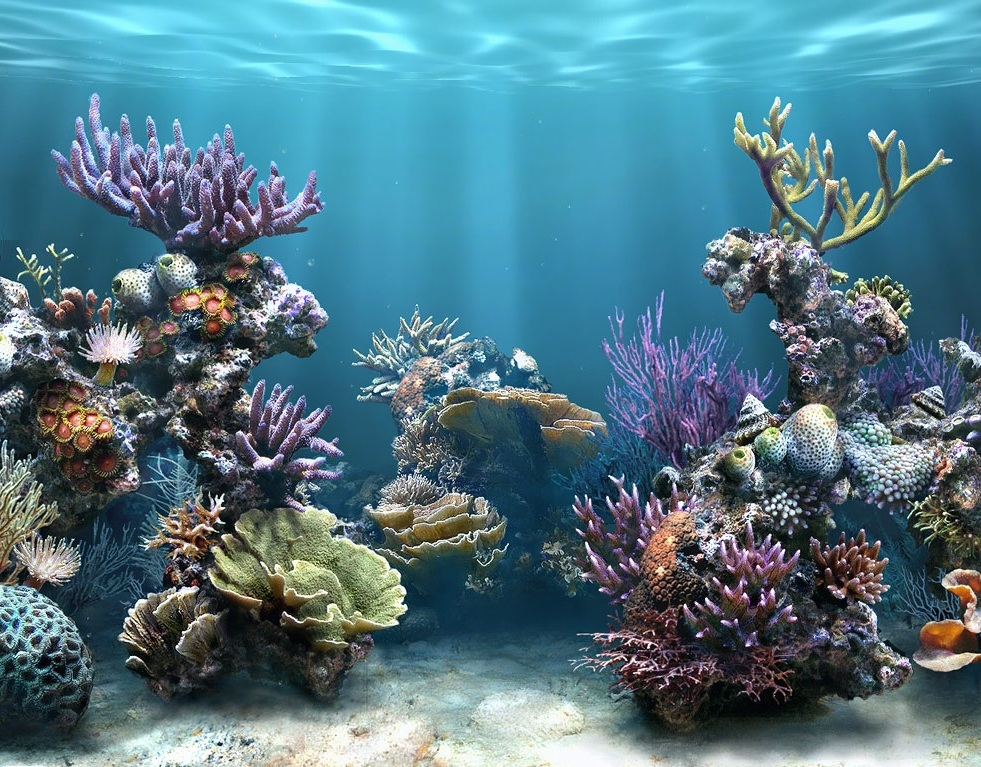

Thanks for checking out this site. This demo uses the canvas element to draw fish swimming in a fish tank. The FPS count
tells you how many frames per second the browser is able to draw. If you add or remove fish, the frames per second will
go up or down depending on how much work the browser is able to do each frame. The UI is primarliy driven through Javascript
and Canvas. The purpose of these demos is to convey a concept and not intended to be used as a best practice for web
development. It’s not the cleanest code, and in some places we took shortcuts to get more demos to you. Enjoy!